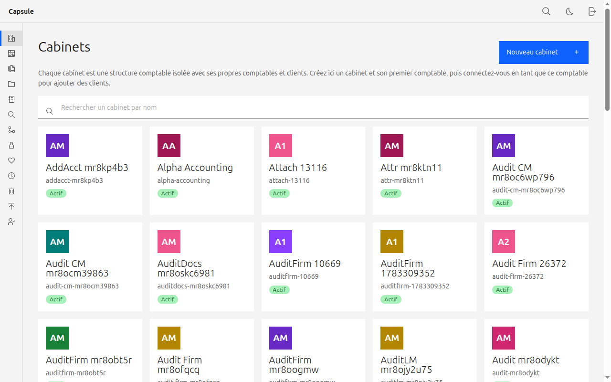
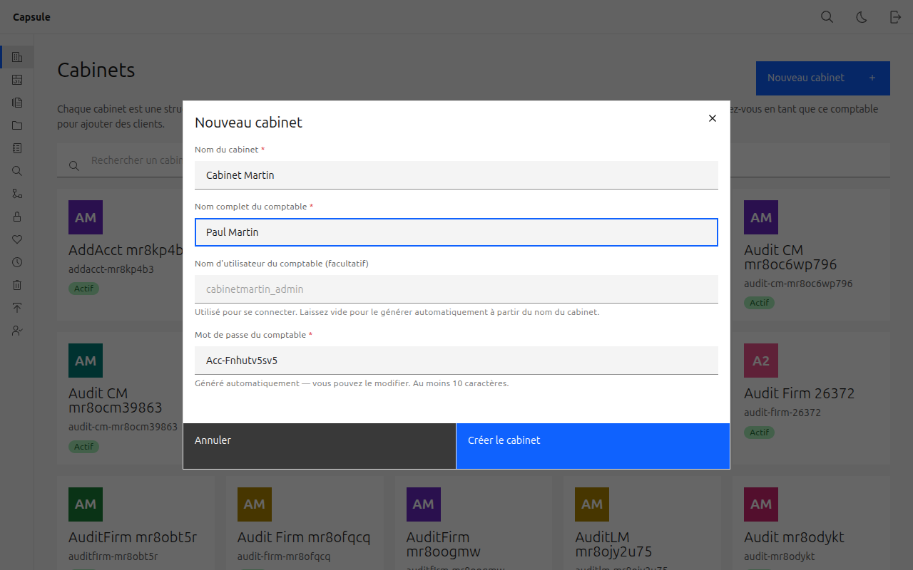
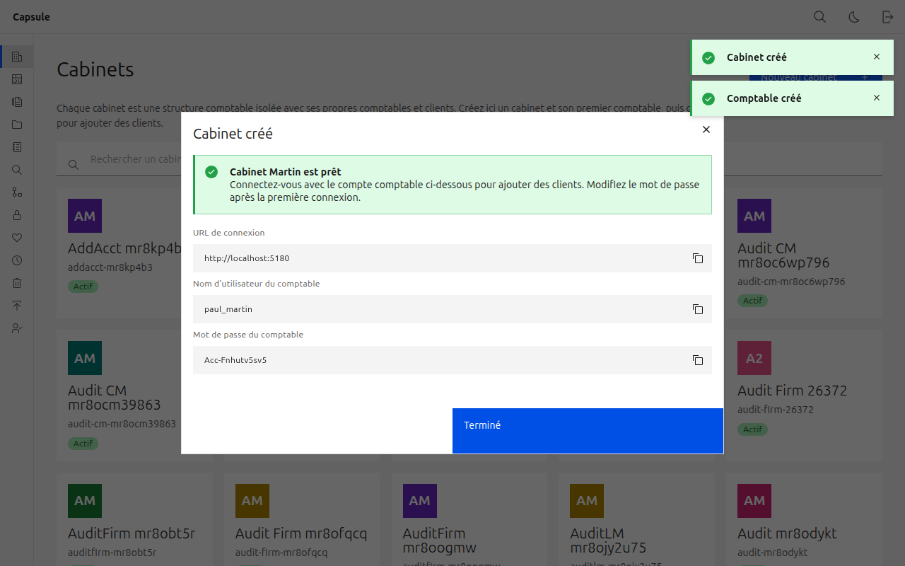
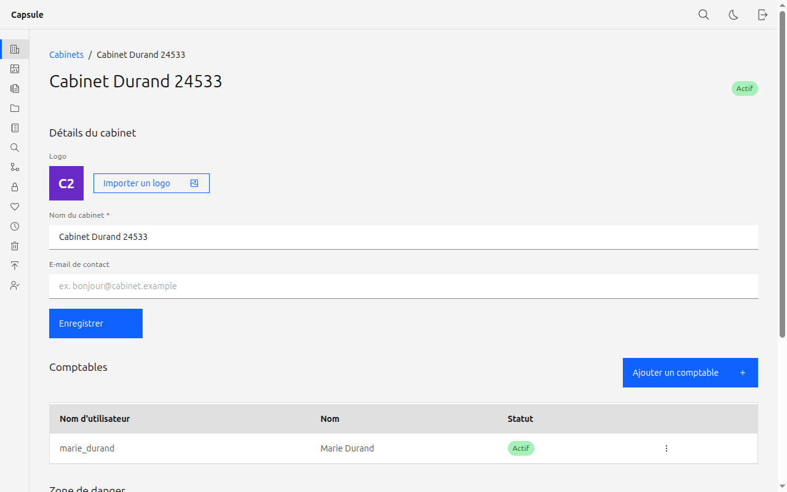

Le compte administrateur gère la plateforme : il crée les cabinets comptables et
leurs comptables. Chaque cabinet est ensuite autonome pour gérer ses propres clients.
Ce guide vous accompagne, étape par étape.
Administrateur — vous, propriétaire de la plateformeCabinet — une structure comptableComptable — utilise le cabinet au quotidien
Important : changez le mot de passe administrateur après la première connexion et conservez-le en lieu sûr — c'est le compte maître de la plateforme.
02
Créer un cabinet
Dans le menu de gauche, cliquez sur Cabinets.
Cliquez sur Nouveau cabinet (en haut à droite).
Renseignez le Nom du cabinet et le Nom complet du premier comptable. Le nom d'utilisateur est généré automatiquement (laissez-le vide) et un mot de passe est pré-rempli.
Cliquez sur Créer le cabinet.
Copiez l'identifiant et le mot de passe du comptable affichés — c'est l'accès quotidien du cabinet. Ils ne s'affichent qu'une seule fois.

La grille des cabinets, avec la recherche et les logos.

Créer un cabinet et son premier comptable.

Les identifiants de connexion du comptable, à transmettre au cabinet.
03
Gérer un cabinet
Dans la grille Cabinets, cliquez sur un cabinet pour ouvrir sa fiche.
Détails du cabinet — modifiez le nom, l'e-mail de contact et le logo, puis Enregistrer.
Comptables — ajoutez un comptable, réinitialisez un mot de passe, désactivez ou retirez un compte.
Zone de danger — désactivez le cabinet (bloque tous ses accès, comptables et clients inclus) ou supprimez-le définitivement.

La fiche d'un cabinet : détails, liste des comptables et zone de danger.
La désactivation est réversible et conserve tous les documents. La suppression est définitive.